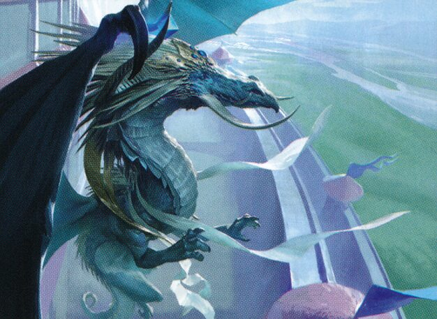
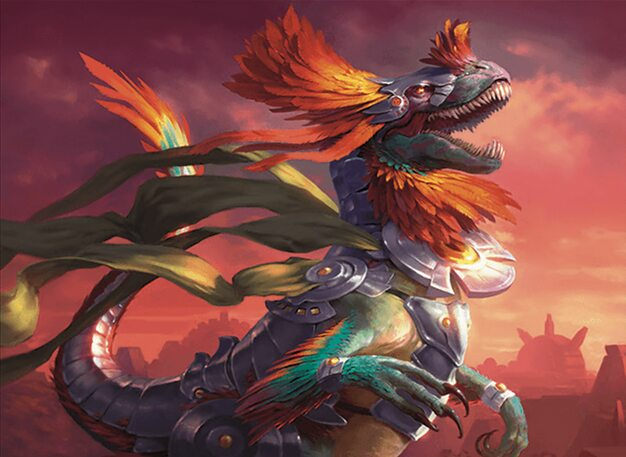
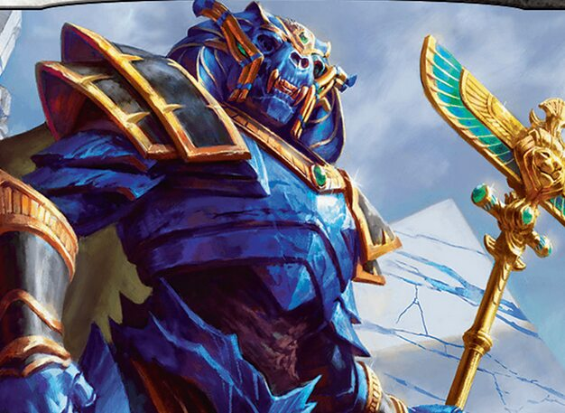

Which commanders win most often on your budget?
64 popular commanders per price class, each built as a budget deck and continuously tested against each other in Forge – with decklist, statistics and a Cardmarket shopping list.
See the rankings Test your own deck2 free slots left
So far 32,711 games in 209 tournaments with 448 decks. Latest tournament: – the site updates automatically afterwards.
Rankings
The most successful decks up to €100 in the Forge simulation (Bracket 3: at most 3 Game Changers).
 Illustration: Eric Deschamps · © Wizards of the Coast
Illustration: Eric Deschamps · © Wizards of the CoastOloro, Ageless Ascetic
 Illustration: Kai Carpenter · © Wizards of the Coast
Illustration: Kai Carpenter · © Wizards of the CoastGiada, Font of Hope
 Illustration: Valera Lutfullina · © Wizards of the Coast
Illustration: Valera Lutfullina · © Wizards of the CoastUreni of the Unwritten
Rankings up to €100
from 49 tournaments Kaalia of the VastElo 1657
Kaalia of the VastElo 1657 The Ur-DragonElo 1657
The Ur-DragonElo 1657 Atraxa, Praetors' VoiceElo 1650
Atraxa, Praetors' VoiceElo 1650 Kuja, Genome Sorcerer // Trance Kuja, Fate DefiedElo 1648
Kuja, Genome Sorcerer // Trance Kuja, Fate DefiedElo 1648
Arcades, the StrategistElo 1643 Edgar MarkovElo 1625
Edgar MarkovElo 1625 Jodah, the UnifierElo 1625
Jodah, the UnifierElo 1625 Sephiroth, Fabled SOLDIER // Sephiroth, One-Winged AngelElo 1616
Sephiroth, Fabled SOLDIER // Sephiroth, One-Winged AngelElo 1616 Teysa KarlovElo 1616
Teysa KarlovElo 1616 Valgavoth, Harrower of SoulsElo 1604
Valgavoth, Harrower of SoulsElo 1604 Bello, Bard of the BramblesElo 1601
Bello, Bard of the BramblesElo 1601
Pantlaza, Sun-FavoredElo 1586 Korvold, Fae-Cursed KingElo 1583
Korvold, Fae-Cursed KingElo 1583 Ashling, the LimitlessElo 1582
Ashling, the LimitlessElo 1582 Hakbal of the Surging SoulElo 1581
Hakbal of the Surging SoulElo 1581 Rin and Seri, InseparableElo 1550
Rin and Seri, InseparableElo 1550 Ygra, Eater of AllElo 1545
Ygra, Eater of AllElo 1545 Zhulodok, Void GorgerElo 1545
Zhulodok, Void GorgerElo 1545 The Wise MothmanElo 1536
The Wise MothmanElo 1536 Lathril, Blade of the ElvesElo 1531
Lathril, Blade of the ElvesElo 1531 Hearthhull, the WorldseedElo 1526
Hearthhull, the WorldseedElo 1526 Atla Palani, Nest TenderElo 1521
Atla Palani, Nest TenderElo 1521 Wilhelt, the RotcleaverElo 1519
Wilhelt, the RotcleaverElo 1519 Vivi OrnitierElo 1503
Vivi OrnitierElo 1503 Ulalek, Fused AtrocityElo 1501
Ulalek, Fused AtrocityElo 1501 Kefka, Court Mage // Kefka, Ruler of RuinElo 1499
Kefka, Court Mage // Kefka, Ruler of RuinElo 1499 Caesar, Legion's EmperorElo 1493
Caesar, Legion's EmperorElo 1493 Chatterfang, Squirrel GeneralElo 1492
Chatterfang, Squirrel GeneralElo 1492 Zurgo StormrenderElo 1488
Zurgo StormrenderElo 1488 Muldrotha, the GravetideElo 1486
Muldrotha, the GravetideElo 1486 Isshin, Two Heavens as OneElo 1470
Isshin, Two Heavens as OneElo 1470 Baylen, the HaymakerElo 1464
Baylen, the HaymakerElo 1464 Meren of Clan Nel TothElo 1462
Meren of Clan Nel TothElo 1462 Teval, the Balanced ScaleElo 1461
Teval, the Balanced ScaleElo 1461 The Wandering MinstrelElo 1456
The Wandering MinstrelElo 1456 Felothar the SteadfastElo 1454
Felothar the SteadfastElo 1454 Aragorn, the UniterElo 1446
Aragorn, the UniterElo 1446 Tidus, Yuna's GuardianElo 1421
Tidus, Yuna's GuardianElo 1421 Cloud, Ex-SOLDIERElo 1420
Cloud, Ex-SOLDIERElo 1420 Ms. BumbleflowerElo 1411
Ms. BumbleflowerElo 1411 Animar, Soul of ElementsElo 1388
Animar, Soul of ElementsElo 1388 Mr. House, President and CEOElo 1387
Mr. House, President and CEOElo 1387 Yuriko, the Tiger's ShadowElo 1381
Yuriko, the Tiger's ShadowElo 1381 Maralen, Fae AscendantElo 1379
Maralen, Fae AscendantElo 1379 Frodo, Adventurous Hobbit // Sam, Loyal AttendantElo 1374
Frodo, Adventurous Hobbit // Sam, Loyal AttendantElo 1374 Sauron, the Dark LordElo 1362
Sauron, the Dark LordElo 1362 The NecrobloomElo 1362
The NecrobloomElo 1362 Esika, God of the Tree // The Prismatic BridgeElo 1353
Esika, God of the Tree // The Prismatic BridgeElo 1353 Krenko, Mob BossElo 1340
Krenko, Mob BossElo 1340
Hashaton, Scarab's FistElo 1332 Kenrith, the Returned KingElo 1321
Kenrith, the Returned KingElo 1321 Flubs, the FoolElo 1315
Flubs, the FoolElo 1315| # | Commander | Elo | Form | Tier | Games | Price |
|---|---|---|---|---|---|---|
| 1 | | 1780▲23 | 1241111312 | S | 490 (4) | €98.73 |
| 2 | | 1735▲28 | 1341113411 | S | 491 (12) | €99.84 |
| 3 | | 1732▲6 | 1212232412 | S | 490 (2) | €96.47 |
| 4 |  | 1703▼6 | 1441233142 | S | 491 (6) | €88.47 |
| 5 |  | 1683▲2 | 3434121214 | S | 491 (3) | €95.93 |
| 6 |  | 1667▼15 | 2123332334 | S | 491 (10) | €99.86 |
| 7 | | 1657▼18 | 4423112444 | A | 491 (9) | €93.19 |
| 8 | | 1657▲1 | 3232314123 | A | 492 (4) | €95.75 |
| 9 | | 1650▲1 | 3312332142 | A | 491 (13) | €99.79 |
| 10 | | 1648▼42 | 2323443433 | A | 490 (1) | €95.46 |
| 11 | 1643▲10 | 1212312334 | A | 491 (16) | €95.64 | |
| 12 | | 1625▼3 | 3131334233 | A | 491 (13) | €97.14 |
| 13 | | 1625▲52 | 3211241111 | A | 490 (14) | €93.47 |
| 14 | | 1616▲3 | 4411413223 | A | 490 (9) | €97.41 |
| 15 | | 1616▲6 | 2134414123 | A | 490 (23) | €94.66 |
| 16 | | 1604▼2 | 1321244342 | A | 491 (2) | €96.86 |
| 17 | | 1601▲10 | 2243421131 | A | 490 (9) | €94.50 |
| 18 | 1586▲1 | 4331341321 | A | 490 (15) | €99.18 | |
| 19 | | 1583▼4 | 4221221434 | A | 491 (10) | €98.60 |
| 20 | | 1582▲24 | 2112214322 | A | 492 (13) | €93.74 |
| 21 | | 1581▼30 | 3444214443 | B | 492 (6) | €96.31 |
| 22 | | 1550▲5 | 2142431214 | B | 490 (16) | €99.51 |
| 23 | | 1545▲5 | 1424243112 | B | 492 (11) | €98.30 |
| 24 | | 1545▲2 | 1334123222 | B | 490 (42) | €99.53 |
| 25 | | 1536▲29 | 2142421121 | B | 492 (13) | €96.44 |
| 26 | | 1531▲33 | 4311144211 | B | 491 (11) | €99.97 |
| 27 | | 1526▼3 | 2433313214 | B | 490 (15) | €95.89 |
| 28 | | 1521▲33 | 3123212211 | B | 490 (17) | €95.25 |
| 29 | | 1519▲13 | 2412212422 | B | 491 (12) | €99.96 |
| 30 | | 1503▲4 | 4323111244 | B | 492 (9) | €98.96 |
| 31 | | 1501▲53 | 1212311411 | B | 491 (15) | €97.96 |
| 32 | | 1499▼4 | 2214442212 | B | 491 (5) | €95.69 |
| 33 | | 1493▼49 | 3224424444 | B | 492 (17) | €95.39 |
| 34 | | 1492▼18 | 4331134441 | B | 490 (18) | €97.59 |
| 35 | | 1488▲10 | 1312333431 | B | 492 (24) | €90.88 |
| 36 | | 1486▼1 | 4141323134 | B | 490 (23) | €95.04 |
| 37 | | 1470▲4 | 3142313133 | B | 490 (15) | €95.13 |
| 38 | | 1464▼43 | 3333443422 | B | 490 (32) | €99.53 |
| 39 | | 1462▼22 | 4134314334 | B | 491 (9) | €98.50 |
| 40 | | 1461▼26 | 3424312244 | B | 491 (25) | €98.66 |
| 41 | | 1456▼3 | 2212434132 | B | 172 | €94.08 |
| 42 | | 1454▼15 | 1242234323 | B | 261 | €96.70 |
| 43 | | 1446±0 | 4414224213 | B | 492 (25) | €93.25 |
| 44 | | 1421▲2 | 1141322334 | B | 491 (15) | €99.52 |
| 45 | | 1420▼13 | 3414433231 | C | 490 (14) | €97.01 |
| 46 | | 1411▲18 | 2223141312 | C | 491 (34) | €88.65 |
| 47 | | 1388▼7 | 3312243223 | C | 491 (13) | €99.64 |
| 48 | | 1387▲24 | 3224141112 | C | 492 (13) | €99.99 |
| 49 | | 1381▼21 | 4334124431 | C | 491 (18) | €99.52 |
| 50 | | 1379▲19 | 1341213133 | C | 492 (26) | €97.37 |
| 51 | | 1374▲12 | 2122221332 | C | 492 (33) | €98.94 |
| 52 | | 1362▲4 | 4432112314 | C | 493 (13) | €99.30 |
| 53 | | 1362▲21 | 2231312114 | C | 490 (44) | €99.54 |
| 54 | | 1353▼15 | 2444423221 | C | 491 (21) | €98.13 |
| 55 | | 1340▲33 | 4421331111 | C | 492 (25) | €99.73 |
| 56 | 1332▲1 | 4144121342 | C | 493 (23) | €97.01 | |
| 57 | | 1321±0 | 3112332442 | C | 491 (34) | €94.44 |
| 58 | | 1315▲25 | 1342211341 | C | 492 (37) | €98.17 |
| 59 | 1300▼25 | 3223433233 | D | 90 | €98.15 | |
| 60 |  | 1262▼19 | 1444324224 | D | 491 (24) | €96.34 |
| 61 |  | 1261▼40 | 3433424344 | D | 492 (16) | €98.28 |
| 62 |  | 1255▼20 | 4312444423 | D | 493 (33) | €99.42 |
| 63 |  | 1243▲3 | 1133423433 | D | 492 (33) | €97.71 |
| 64 |  | 1227▲5 | 2233434212 | D | 493 (21) | €99.38 |
- Reign of Dragons – Elo 1585, win rate 29% in 170 games, would be rank 19
- Avengers Assemble – Elo 1552, win rate 25% in 170 games, would be rank 22
- Turtle Power! – Elo 1533, win rate 27% in 170 games, would be rank 26
- Doom Prevails – Elo 1518, win rate 26% in 170 games, would be rank 30
No longer in the field (dropped out of the EDHREC top, so not ranked): Gishath, Sun's Avatar (Elo 1684, 318 games), Tom Bombadil (Elo 1502, 384 games), Arabella, Abandoned Doll (Elo 1466, 216 games)
The most successful decks up to €200 in the Forge simulation (Bracket 3: at most 3 Game Changers).
Illustration: Eric Deschamps · © Wizards of the CoastOloro, Ageless Ascetic
Illustration: Mark Winters · © Wizards of the CoastNekusar, the Mindrazer
Illustration: Valera Lutfullina · © Wizards of the CoastUreni of the Unwritten
Rankings up to €200
from 49 tournamentsEdgar MarkovElo 1686Atraxa, Praetors' VoiceElo 1681Sephiroth, Fabled SOLDIER // Sephiroth, One-Winged AngelElo 1668Miirym, Sentinel WyrmElo 1644Valgavoth, Harrower of SoulsElo 1635The Ur-DragonElo 1627Atla Palani, Nest TenderElo 1616Kuja, Genome Sorcerer // Trance Kuja, Fate DefiedElo 1613Pantlaza, Sun-FavoredElo 1598Bello, Bard of the BramblesElo 1596The Wise MothmanElo 1582Jodah, the UnifierElo 1573Hakbal of the Surging SoulElo 1565Korvold, Fae-Cursed KingElo 1562Zhulodok, Void GorgerElo 1554Ygra, Eater of AllElo 1541Teval, the Balanced ScaleElo 1536Teysa KarlovElo 1526Arcades, the StrategistElo 1525Baylen, the HaymakerElo 1525Hearthhull, the WorldseedElo 1522Rin and Seri, InseparableElo 1521Lathril, Blade of the ElvesElo 1519Meren of Clan Nel TothElo 1514Ms. BumbleflowerElo 1505Ashling, the LimitlessElo 1499Ulalek, Fused AtrocityElo 1484Animar, Soul of ElementsElo 1476Isshin, Two Heavens as OneElo 1474Caesar, Legion's EmperorElo 1459Zurgo StormrenderElo 1448Aragorn, the UniterElo 1442Felothar the SteadfastElo 1441Vivi OrnitierElo 1441Kefka, Court Mage // Kefka, Ruler of RuinElo 1439Muldrotha, the GravetideElo 1435Chatterfang, Squirrel GeneralElo 1433Yuriko, the Tiger's ShadowElo 1413Wilhelt, the RotcleaverElo 1407Tidus, Yuna's GuardianElo 1407Cloud, Ex-SOLDIERElo 1399Esika, God of the Tree // The Prismatic BridgeElo 1398Maralen, Fae AscendantElo 1394The NecrobloomElo 1385Mr. House, President and CEOElo 1367The Wandering MinstrelElo 1366Hashaton, Scarab's FistElo 1357Sauron, the Dark LordElo 1341Glarb, Calamity's AugurElo 1338Flubs, the FoolElo 1334Frodo, Adventurous Hobbit // Sam, Loyal AttendantElo 1324Breya, Etherium ShaperElo 1324| # | Commander | Elo | Form | Tier | Games | Price |
|---|---|---|---|---|---|---|
| 1 | | 1784▲27 | 1342211111 | S | 493 (10) | €190.55 |
| 2 | | 1739▼17 | 4=14232123 | S | 492 (3) | €193.41 |
| 3 | | 1713▲10 | 3112421142 | S | 493 (6) | €190.47 |
| 4 | | 1712▼14 | 2233223412 | S | 491 (11) | €192.59 |
| 5 | | 1709▲1 | 1=14112443 | S | 492 (7) | €184.54 |
| 6 | | 1696▼3 | 1143242412 | S | 490 (7) | €186.36 |
| 7 | | 1686▲9 | 1243134311 | A | 490 (11) | €193.90 |
| 8 | | 1681▼1 | 2211244144 | A | 491 (11) | €190.72 |
| 9 | | 1668▲9 | 4421312231 | A | 491 (11) | €198.17 |
| 10 | | 1644▲5 | 1=42131424 | A | 492 (5) | €196.75 |
| 11 | | 1635▼35 | 3341343343 | A | 490 (2) | €191.72 |
| 12 | | 1627▼9 | 4=34113333 | A | 490 (4) | €192.94 |
| 13 | | 1616▼30 | 4422414334 | A | 490 (15) | €192.66 |
| 14 | | 1613▼15 | 4414234134 | A | 490 (3) | €191.91 |
| 15 | 1598▼31 | 4233344323 | A | 490 (10) | €193.07 | |
| 16 | | 1596▲25 | 1134221123 | A | 491 (7) | €184.47 |
| 17 | | 1582▼5 | 2312324224 | A | 492 (16) | €174.37 |
| 18 | | 1573▼16 | 3334231342 | A | 491 (20) | €185.03 |
| 19 | | 1565▼4 | 3121224244 | A | 490 (13) | €177.04 |
| 20 | | 1562▲5 | 2212222414 | B | 491 (10) | €192.24 |
| 21 | | 1554▼11 | 3431421423 | B | 492 (48) | €199.63 |
| 22 | | 1541▲15 | 1432144211 | B | 490 (17) | €199.54 |
| 23 | | 1536▲23 | 3321221231 | B | 491 (35) | €199.44 |
| 24 | | 1526▲14 | 4144141132 | B | 491 (18) | €187.71 |
| 25 | 1525▼3 | 2444143221 | B | 490 (13) | €187.19 | |
| 26 | | 1525▲12 | 2442131212 | B | 493 (31) | €197.40 |
| 27 | | 1522▲32 | 4122311124 | B | 490 (29) | €181.00 |
| 28 | | 1521▼10 | 2323332314 | B | 491 (18) | €188.98 |
| 29 | | 1519▲2 | 1124134434 | B | 490 (15) | €199.59 |
| 30 | | 1514▼10 | 3211344343 | B | 490 (18) | €193.04 |
| 31 | | 1505▲18 | 2121122324 | B | 491 (28) | €191.99 |
| 32 | | 1499▲42 | 3114431111 | B | 491 (21) | €184.67 |
| 33 | | 1484▲13 | 2241412123 | B | 492 (18) | €193.78 |
| 34 | | 1476▲10 | 1413332132 | B | 491 (20) | €194.18 |
| 35 | | 1474▼20 | 2333124242 | B | 491 (10) | €185.18 |
| 36 | | 1459▲6 | 1222213334 | B | 493 (19) | €183.84 |
| 37 | | 1448▼13 | 4214242441 | B | 490 (21) | €183.45 |
| 38 | | 1442▲10 | 3312214431 | B | 490 (24) | €189.97 |
| 39 | | 1441▼31 | 4444333241 | B | 310 (1) | €191.79 |
| 40 | | 1441▲20 | 4114211333 | B | 492 (12) | €194.88 |
| 41 | | 1439▼1 | 1331443412 | B | 491 (11) | €194.91 |
| 42 | | 1435▲5 | 4213314214 | B | 490 (24) | €186.99 |
| 43 | | 1433▲5 | 2442114212 | B | 493 (21) | €190.87 |
| 44 | | 1413▲26 | 4131221313 | B | 490 (11) | €199.94 |
| 45 | | 1407▲5 | 1123323413 | C | 490 (16) | €193.69 |
| 46 | | 1407▲26 | 1313134112 | C | 492 (23) | €198.51 |
| 47 | | 1399▼49 | 2343444343 | C | 490 (20) | €193.72 |
| 48 | | 1398▲10 | 4441131123 | C | 492 (22) | €193.10 |
| 49 | | 1394▼24 | 2424432314 | C | 491 (33) | €192.81 |
| 50 | | 1385▲15 | 1141244141 | C | 492 (39) | €199.05 |
| 51 | | 1367▼14 | 2323212343 | C | 492 (22) | €199.95 |
| 52 | | 1366▲32 | 4132131312 | C | 182 (2) | €190.53 |
| 53 | 1357▲5 | 2221241422 | C | 491 (15) | €197.88 | |
| 54 | | 1341▼33 | 1443442332 | C | 492 (14) | €193.22 |
| 55 | | 1338▲5 | 1223213324 | C | 491 (48) | €185.61 |
| 56 | | 1334▲21 | 2114222212 | C | 491 (27) | €178.61 |
| 57 | | 1324▼3 | 3122441423 | C | 491 (35) | €191.11 |
| 58 | | 1324▲43 | 4133131211 | C | 491 (23) | €199.90 |
| 59 | | 1294▼44 | 3333443434 | D | 492 (28) | €199.45 |
| 60 | | 1290▲14 | 3324314114 | D | 490 (29) | €193.84 |
| 61 | | 1290▼1 | 2422323421 | D | 491 (40) | €195.45 |
| 62 | | 1279▼20 | 3414423243 | D | 491 (24) | €192.02 |
| 63 | 1252▼23 | 4233234343 | D | 101 | €199.15 | |
| 64 | | 1201▼21 | 2342344434 | D | 494 (18) | €195.75 |
- Reign of Dragons – Elo 1584, win rate 24% in 160 games, would be rank 17
- Doom Prevails – Elo 1575, win rate 26% in 160 games, would be rank 18
- Turtle Power! – Elo 1542, win rate 27% in 160 games, would be rank 22
- Avengers Assemble – Elo 1521, win rate 29% in 160 games, would be rank 28
No longer in the field (dropped out of the EDHREC top, so not ranked): Gishath, Sun's Avatar (Elo 1713, 300 games), Tom Bombadil (Elo 1565, 360 games), Arabella, Abandoned Doll (Elo 1512, 165 games)
The most successful decks up to €300 in the Forge simulation (Bracket 3: at most 3 Game Changers).
Illustration: Eric Deschamps · © Wizards of the CoastOloro, Ageless Ascetic
Illustration: Mark Winters · © Wizards of the CoastNekusar, the Mindrazer
Illustration: Volkan Baǵa · © Wizards of the CoastEdgar Markov
Rankings up to €300
from 27 tournamentsY'shtola, Night's BlessedElo 1698Pantlaza, Sun-FavoredElo 1685Kuja, Genome Sorcerer // Trance Kuja, Fate DefiedElo 1677Kaalia of the VastElo 1670Zhulodok, Void GorgerElo 1669Sephiroth, Fabled SOLDIER // Sephiroth, One-Winged AngelElo 1667Valgavoth, Harrower of SoulsElo 1662Miirym, Sentinel WyrmElo 1636The Wise MothmanElo 1615Ygra, Eater of AllElo 1600Atraxa, Praetors' VoiceElo 1591Korvold, Fae-Cursed KingElo 1568Hakbal of the Surging SoulElo 1567Aragorn, the UniterElo 1566Caesar, Legion's EmperorElo 1560Atla Palani, Nest TenderElo 1559Bello, Bard of the BramblesElo 1546Jodah, the UnifierElo 1540Lathril, Blade of the ElvesElo 1539Ulalek, Fused AtrocityElo 1534Meren of Clan Nel TothElo 1533Zurgo StormrenderElo 1523Teval, the Balanced ScaleElo 1517Isshin, Two Heavens as OneElo 1509Teysa KarlovElo 1502Arcades, the StrategistElo 1499Felothar the SteadfastElo 1496Animar, Soul of ElementsElo 1481Esika, God of the Tree // The Prismatic BridgeElo 1470Vivi OrnitierElo 1461Rin and Seri, InseparableElo 1458Ashling, the LimitlessElo 1453Baylen, the HaymakerElo 1441Muldrotha, the GravetideElo 1436The Wandering MinstrelElo 1433Hearthhull, the WorldseedElo 1415Ms. BumbleflowerElo 1413Mr. House, President and CEOElo 1410Chatterfang, Squirrel GeneralElo 1409Cloud, Ex-SOLDIERElo 1406Wilhelt, the RotcleaverElo 1398Tidus, Yuna's GuardianElo 1397Yuriko, the Tiger's ShadowElo 1391Frodo, Adventurous Hobbit // Sam, Loyal AttendantElo 1389Sauron, the Dark LordElo 1370Kefka, Court Mage // Kefka, Ruler of RuinElo 1352Krenko, Mob BossElo 1344Hashaton, Scarab's FistElo 1331The NecrobloomElo 1324Maralen, Fae AscendantElo 1303Kinnan, Bonder ProdigyElo 1296| # | Commander | Elo | Form | Tier | Games | Price |
|---|---|---|---|---|---|---|
| 1 | | 1787▼9 | 1141244132 | S | 273 | €285.84 |
| 2 | | 1740▲20 | 1313143121 | S | 271 | €276.88 |
| 3 | | 1737▲6 | 1122124414 | S | 270 (1) | €289.97 |
| 4 | | 1732▲13 | 2134311123 | S | 272 | €286.71 |
| 5 | | 1710▲10 | 3412122321 | S | 273 | €284.69 |
| 6 | | 1709▼2 | 4231421241 | S | 270 | €283.52 |
| 7 | | 1698▲14 | 4221123231 | A | 271 | €290.90 |
| 8 | 1685▲7 | 2312312144 | A | 270 (1) | €294.25 | |
| 9 | | 1677▼21 | 1423413343 | A | 270 | €295.73 |
| 10 | | 1670▼18 | 2224424412 | A | 270 | €284.96 |
| 11 | | 1669▲16 | 3241133411 | A | 272 (8) | €296.92 |
| 12 | | 1667▲7 | 2143123431 | A | 270 | €298.11 |
| 13 | | 1662▼24 | 1314443324 | A | 272 | €292.65 |
| 14 | | 1636±0 | 2422243113 | A | 272 | €291.11 |
| 15 | | 1615▲29 | 1333211421 | A | 270 | €274.75 |
| 16 | | 1600▲14 | 2232321221 | A | 270 (1) | €287.96 |
| 17 | | 1591▲5 | 3141232232 | A | 271 | €291.80 |
| 18 | | 1568▲2 | 4333211234 | A | 272 | €291.36 |
| 19 | | 1567▼11 | 4414233413 | A | 270 | €278.72 |
| 20 | | 1566▲11 | 3112441332 | B | 270 (4) | €288.25 |
| 21 | | 1560▲28 | 4141311332 | B | 270 (2) | €290.90 |
| 22 | | 1559▲24 | 1314421114 | B | 270 (2) | €295.23 |
| 23 | | 1546▼16 | 3422242413 | B | 271 (3) | €277.63 |
| 24 | | 1540▼7 | 3233423113 | B | 270 (2) | €295.55 |
| 25 | | 1539▲11 | 1421314412 | B | 271 | €299.74 |
| 26 | | 1534▼2 | 3121342334 | B | 271 (2) | €297.31 |
| 27 | | 1533▼23 | 1423242244 | B | 272 | €283.96 |
| 28 | | 1523▲34 | 1241114142 | B | 270 | €292.76 |
| 29 | | 1517▼3 | 1314133443 | B | 271 | €291.61 |
| 30 | | 1509▲9 | 4114331241 | B | 270 | €280.85 |
| 31 | | 1502▲9 | 3323411124 | B | 270 | €275.22 |
| 32 | 1499▼39 | 3343333433 | B | 270 (3) | €273.37 | |
| 33 | | 1496▲7 | 2141233214 | B | 270 (3) | €212.88 |
| 34 | | 1481▼3 | 2122444141 | B | 271 (3) | €291.94 |
| 35 | | 1470▼35 | 2424333342 | B | 273 (4) | €280.55 |
| 36 | | 1461▼16 | 3434232331 | B | 270 (2) | €293.63 |
| 37 | | 1458▼2 | 2341242314 | B | 270 | €298.09 |
| 38 | | 1453▼5 | 4434114241 | B | 271 | €289.23 |
| 39 | | 1441▼10 | 3343132144 | B | 270 (1) | €296.83 |
| 40 | | 1436▼23 | 2222244333 | B | 271 (2) | €289.42 |
| 41 | | 1433▲3 | 4134234111 | B | 171 | €279.55 |
| 42 | | 1415▲3 | 4433211222 | B | 270 (3) | €239.89 |
| 43 | | 1413▲21 | 1314313412 | B | 270 (1) | €293.30 |
| 44 | | 1410▼6 | 4143421233 | B | 272 (2) | €293.48 |
| 45 | | 1409▲26 | 1132112333 | B | 272 (1) | €299.92 |
| 46 | | 1406▼10 | 2223422134 | C | 272 | €282.15 |
| 47 | | 1398▼27 | 4122433443 | C | 272 (1) | €282.02 |
| 48 | | 1397▲12 | 3312321412 | C | 271 (2) | €291.21 |
| 49 | | 1391▲17 | 3214112422 | C | 271 | €296.69 |
| 50 | | 1389▲35 | 3141311131 | C | 271 (4) | €279.77 |
| 51 | | 1370▼10 | 2341341322 | C | 270 (1) | €297.58 |
| 52 | | 1352▼28 | 4424232144 | C | 272 (1) | €292.11 |
| 53 | | 1344▼16 | 4141334441 | C | 271 (3) | €299.86 |
| 54 | 1331▼13 | 1323242224 | C | 270 (2) | €291.69 | |
| 55 | | 1324▼3 | 3423113343 | C | 270 (9) | €283.62 |
| 56 | 1320▼23 | 2212444423 | C | 91 | €291.64 | |
| 57 | | 1303▲2 | 3433411341 | C | 271 (2) | €293.86 |
| 58 | | 1296▲7 | 2142322214 | C | 270 (9) | €294.10 |
| 59 | | 1287▲25 | 4331221213 | D | 270 (6) | €285.08 |
| 60 | | 1273±0 | 2412232224 | D | 270 (4) | €287.39 |
| 61 | | 1266▼5 | 2224314224 | D | 270 (3) | €273.95 |
| 62 | | 1263▲20 | 1231143324 | D | 270 (6) | €278.19 |
| 63 | | 1259▼12 | 1342243432 | D | 271 (4) | €294.17 |
| 64 | | 1227▲5 | 4443341123 | D | 272 (3) | €289.68 |
- Reign of Dragons – Elo 1558, win rate 22% in 130 games, would be rank 23
- Turtle Power! – Elo 1525, win rate 27% in 130 games, would be rank 28
- Doom Prevails – Elo 1517, win rate 25% in 130 games, would be rank 30
- Avengers Assemble – Elo 1464, win rate 24% in 130 games, would be rank 36
No longer in the field (dropped out of the EDHREC top, so not ranked): Gishath, Sun's Avatar (Elo 1765, 101 games), Tom Bombadil (Elo 1503, 179 games)
The most successful decks up to €400 in the Forge simulation (Bracket 3: at most 3 Game Changers).
Illustration: Eric Deschamps · © Wizards of the CoastOloro, Ageless Ascetic
Illustration: Valera Lutfullina · © Wizards of the CoastUreni of the Unwritten
Illustration: Mark Winters · © Wizards of the CoastNekusar, the Mindrazer
Rankings up to €400
from 22 tournamentsSephiroth, Fabled SOLDIER // Sephiroth, One-Winged AngelElo 1683Pantlaza, Sun-FavoredElo 1677Lathril, Blade of the ElvesElo 1662Miirym, Sentinel WyrmElo 1660Atraxa, Praetors' VoiceElo 1658Zhulodok, Void GorgerElo 1658Kuja, Genome Sorcerer // Trance Kuja, Fate DefiedElo 1644Kaalia of the VastElo 1637Edgar MarkovElo 1632Ulalek, Fused AtrocityElo 1628Y'shtola, Night's BlessedElo 1602Ygra, Eater of AllElo 1601The Wise MothmanElo 1584Jodah, the UnifierElo 1562Teysa KarlovElo 1561Meren of Clan Nel TothElo 1558Atla Palani, Nest TenderElo 1551Aragorn, the UniterElo 1534Hakbal of the Surging SoulElo 1532Teval, the Balanced ScaleElo 1526Bello, Bard of the BramblesElo 1521Baylen, the HaymakerElo 1521Zurgo StormrenderElo 1519Caesar, Legion's EmperorElo 1503Isshin, Two Heavens as OneElo 1500Muldrotha, the GravetideElo 1473Vivi OrnitierElo 1470Animar, Soul of ElementsElo 1467Korvold, Fae-Cursed KingElo 1465Felothar the SteadfastElo 1464Hearthhull, the WorldseedElo 1456Ashling, the LimitlessElo 1446Rin and Seri, InseparableElo 1445Kefka, Court Mage // Kefka, Ruler of RuinElo 1438The Wandering MinstrelElo 1432Chatterfang, Squirrel GeneralElo 1427Sauron, the Dark LordElo 1419Ms. BumbleflowerElo 1417Cloud, Ex-SOLDIERElo 1412Frodo, Adventurous Hobbit // Sam, Loyal AttendantElo 1410Wilhelt, the RotcleaverElo 1408Krenko, Mob BossElo 1402Tidus, Yuna's GuardianElo 1398Mr. House, President and CEOElo 1374Yuriko, the Tiger's ShadowElo 1369Hashaton, Scarab's FistElo 1360Esika, God of the Tree // The Prismatic BridgeElo 1350The NecrobloomElo 1324Kenrith, the Returned KingElo 1312Maralen, Fae AscendantElo 1304| # | Commander | Elo | Form | Tier | Games | Price |
|---|---|---|---|---|---|---|
| 1 | | 1790▲4 | 2114411142 | S | 220 | €387.60 |
| 2 | | 1720▲24 | 1121313232 | S | 221 | €390.29 |
| 3 | | 1712▲17 | 3123144121 | S | 220 | €366.15 |
| 4 | | 1711▲10 | 4143212114 | S | 221 | €390.75 |
| 5 | | 1709▼26 | 3422443122 | S | 220 (1) | €393.11 |
| 6 | | 1693▲4 | 1212231343 | S | 220 (1) | €381.51 |
| 7 | | 1683▲34 | 3411123141 | A | 220 | €389.68 |
| 8 | 1677▼47 | 4322344334 | A | 221 (1) | €385.85 | |
| 9 | | 1662▲31 | 1321323112 | A | 220 (1) | €390.66 |
| 10 | | 1660▲29 | 1144112241 | A | 221 | €393.87 |
| 11 | | 1658▲7 | 1242311433 | A | 221 (1) | €389.56 |
| 12 | | 1658▼8 | 1233423341 | A | 221 (7) | €398.36 |
| 13 | | 1644▼34 | 4341422244 | A | 221 | €392.50 |
| 14 | | 1637▼19 | 2324134233 | A | 220 | €378.37 |
| 15 | | 1632▼36 | 4434243223 | A | 220 | €383.31 |
| 16 | | 1628▲15 | 3113332221 | A | 221 (1) | €399.32 |
| 17 | | 1602▲30 | 2121143214 | A | 221 | €390.54 |
| 18 | | 1601▼17 | 4433431441 | A | 220 (1) | €386.55 |
| 19 | | 1584▼22 | 2244333222 | A | 220 | €379.97 |
| 20 | 1564▼11 | 2434114423 | B | 220 (2) | €343.42 | |
| 21 | | 1562▲49 | 2131111132 | B | 222 (3) | €375.30 |
| 22 | | 1561▲1 | 3144232114 | B | 221 (2) | €389.87 |
| 23 | | 1558▲5 | 3223242411 | B | 221 (3) | €385.37 |
| 24 | | 1551▼6 | 3332242124 | B | 222 (3) | €391.05 |
| 25 | | 1534▼17 | 4322224413 | B | 221 (1) | €387.52 |
| 26 | | 1532▼11 | 3332441142 | B | 220 | €351.00 |
| 27 | | 1526▲3 | 1142222432 | B | 221 (3) | €394.37 |
| 28 | | 1521▲11 | 4211344121 | B | 220 (1) | €381.07 |
| 29 | | 1521▼22 | 3423341232 | B | 220 (4) | €391.81 |
| 30 | | 1519▲8 | 3213431413 | B | 220 (1) | €392.91 |
| 31 | | 1503▲36 | 1411212143 | B | 222 (1) | €386.73 |
| 32 | | 1500▲16 | 1123222314 | B | 220 (2) | €388.78 |
| 33 | | 1473▲24 | 4111431341 | B | 220 (2) | €383.55 |
| 34 | | 1470▼11 | 3421241334 | B | 223 (1) | €390.41 |
| 35 | | 1467▼13 | 4233323321 | B | 222 (4) | €385.28 |
| 36 | | 1465▼30 | 2444332414 | B | 220 (1) | €395.26 |
| 37 | | 1464▲16 | 4221133214 | B | 221 (3) | €208.83 |
| 38 | | 1456▼6 | 2442241142 | B | 222 (3) | €239.89 |
| 39 | | 1446▼44 | 4344333244 | B | 220 (1) | €369.10 |
| 40 | | 1445▼28 | 4344242331 | B | 220 (2) | €395.06 |
| 41 | | 1438▲9 | 1411331433 | B | 221 (1) | €381.92 |
| 42 | | 1432▲27 | 3211131243 | B | 140 (2) | €399.34 |
| 43 | | 1427▲5 | 1344411322 | B | 221 | €398.64 |
| 44 | | 1419▲7 | 1413441414 | B | 220 (2) | €387.43 |
| 45 | | 1417▼15 | 3231444312 | B | 220 (3) | €378.28 |
| 46 | | 1412▲8 | 1313241422 | C | 221 (2) | €364.18 |
| 47 | | 1410▲6 | 2313133123 | C | 221 (2) | €376.55 |
| 48 | | 1408▲26 | 2322111413 | C | 221 (1) | €387.19 |
| 49 | | 1402▼15 | 4422433211 | C | 220 | €397.31 |
| 50 | | 1398▼15 | 2222243233 | C | 221 (2) | €337.49 |
| 51 | | 1374▼15 | 4134122244 | C | 220 | €396.16 |
| 52 | | 1369▼10 | 2144244114 | C | 220 | €395.48 |
| 53 | 1360▲13 | 2233211331 | C | 221 (4) | €389.56 | |
| 54 | | 1350▼16 | 3442421331 | C | 220 (1) | €386.54 |
| 55 | | 1324▲28 | 1143213312 | C | 220 (2) | €397.61 |
| 56 | | 1312▲12 | 1241233143 | C | 221 (4) | €378.32 |
| 57 | 1311▼38 | 3333424334 | C | 80 | €394.44 | |
| 58 | | 1304▲1 | 1411433424 | C | 221 (4) | €389.74 |
| 59 | | 1289▲9 | 4123124413 | D | 221 (4) | €389.28 |
| 60 | | 1285▼3 | 4413214243 | D | 221 (6) | €381.14 |
| 61 | | 1279▼3 | 3222242431 | D | 221 (2) | €389.25 |
| 62 | | 1226±0 | 3331322424 | D | 220 (6) | €399.99 |
| 63 | | 1220▼11 | 4334341432 | D | 221 (2) | €397.47 |
| 64 | | 1216▼11 | 2424424223 | D | 220 (3) | €383.47 |
- Reign of Dragons – Elo 1574, win rate 25% in 120 games, would be rank 20
- Doom Prevails – Elo 1548, win rate 21% in 120 games, would be rank 25
- Turtle Power! – Elo 1534, win rate 32% in 120 games, would be rank 25
- Avengers Assemble – Elo 1459, win rate 28% in 120 games, would be rank 38
No longer in the field (dropped out of the EDHREC top, so not ranked): Gishath, Sun's Avatar (Elo 1720, 80 games), Tom Bombadil (Elo 1496, 138 games)
The most successful decks up to €500 in the Forge simulation (Bracket 3: at most 3 Game Changers).
Illustration: Eric Deschamps · © Wizards of the CoastOloro, Ageless Ascetic
Illustration: Valera Lutfullina · © Wizards of the CoastUreni of the Unwritten
Illustration: Kai Carpenter · © Wizards of the CoastGiada, Font of Hope
Rankings up to €500
from 39 tournamentsValgavoth, Harrower of SoulsElo 1701The Ur-DragonElo 1692Kuja, Genome Sorcerer // Trance Kuja, Fate DefiedElo 1677Nekusar, the MindrazerElo 1669Zhulodok, Void GorgerElo 1662The Wise MothmanElo 1661Miirym, Sentinel WyrmElo 1654Sephiroth, Fabled SOLDIER // Sephiroth, One-Winged AngelElo 1635Atraxa, Praetors' VoiceElo 1597Arcades, the StrategistElo 1582Bello, Bard of the BramblesElo 1581Ulalek, Fused AtrocityElo 1564Atla Palani, Nest TenderElo 1563Caesar, Legion's EmperorElo 1559Felothar the SteadfastElo 1550Isshin, Two Heavens as OneElo 1548Lathril, Blade of the ElvesElo 1530Hakbal of the Surging SoulElo 1529Ygra, Eater of AllElo 1526Aragorn, the UniterElo 1521Meren of Clan Nel TothElo 1519Hearthhull, the WorldseedElo 1512Teval, the Balanced ScaleElo 1507Teysa KarlovElo 1505Zurgo StormrenderElo 1501Yuriko, the Tiger's ShadowElo 1498Baylen, the HaymakerElo 1479Korvold, Fae-Cursed KingElo 1469Animar, Soul of ElementsElo 1464Cloud, Ex-SOLDIERElo 1459Rin and Seri, InseparableElo 1458Ms. BumbleflowerElo 1456Sauron, the Dark LordElo 1454Ashling, the LimitlessElo 1447Jodah, the UnifierElo 1441The Wandering MinstrelElo 1419Muldrotha, the GravetideElo 1408Krenko, Mob BossElo 1406Tidus, Yuna's GuardianElo 1398Mr. House, President and CEOElo 1391Esika, God of the Tree // The Prismatic BridgeElo 1383Vivi OrnitierElo 1381Frodo, Adventurous Hobbit // Sam, Loyal AttendantElo 1375Wilhelt, the RotcleaverElo 1362Chatterfang, Squirrel GeneralElo 1332Breya, Etherium ShaperElo 1331The NecrobloomElo 1330Hashaton, Scarab's FistElo 1320Kefka, Court Mage // Kefka, Ruler of RuinElo 1305Maralen, Fae AscendantElo 1302| # | Commander | Elo | Form | Tier | Games | Price |
|---|---|---|---|---|---|---|
| 1 | | 1838▼2 | 4124113311 | S | 390 (11) | €472.89 |
| 2 | | 1744▼18 | 2224232133 | S | 390 (25) | €473.82 |
| 3 | | 1722▲6 | 2421311333 | S | 390 (27) | €474.51 |
| 4 | | 1718▲6 | 2314233211 | S | 390 (25) | €484.53 |
| 5 | 1709▲18 | 3422211114 | S | 390 (42) | €475.75 | |
| 6 | | 1708▼9 | 1431434331 | S | 390 (26) | €483.49 |
| 7 | | 1703▼8 | 3231312244 | S | 390 (16) | €476.48 |
| 8 | | 1701▼20 | 3423414412 | A | 390 (6) | €486.70 |
| 9 | | 1692▲9 | 2113334122 | A | 390 (28) | €477.95 |
| 10 | | 1677▼15 | 3334314214 | A | 390 (9) | €494.28 |
| 11 | | 1669▲12 | 4311142142 | A | 390 (9) | €451.55 |
| 12 | | 1662▲20 | 1211244132 | A | 390 (81) | €489.77 |
| 13 | | 1661▲5 | 4133421124 | A | 390 (29) | €424.25 |
| 14 | | 1654▲7 | 1342132222 | A | 390 (26) | €490.98 |
| 15 | | 1635▲6 | 3141431441 | A | 390 (28) | €492.16 |
| 16 | | 1597▲13 | 1242212342 | A | 390 (27) | €492.49 |
| 17 | 1582▼9 | 1433223422 | A | 390 (38) | €343.42 | |
| 18 | | 1581▼22 | 4224421442 | A | 390 (24) | €414.21 |
| 19 | | 1564▲16 | 2111213344 | A | 390 (50) | €463.12 |
| 20 | | 1563▲4 | 1224311224 | A | 390 (33) | €497.30 |
| 21 | | 1559▼31 | 4243222244 | B | 390 (53) | €493.76 |
| 22 | | 1550▼1 | 3134424311 | B | 130 | €180.33 |
| 23 | | 1548▼25 | 2434224242 | B | 390 (30) | €467.87 |
| 24 | | 1530▲11 | 2124412221 | B | 390 (44) | €495.23 |
| 25 | | 1529▲16 | 2242133211 | B | 390 (35) | €347.94 |
| 26 | | 1526▲38 | 4111113334 | B | 390 (49) | €475.93 |
| 27 | | 1521▼8 | 3434131233 | B | 390 (53) | €489.49 |
| 28 | | 1519▼10 | 2313134442 | B | 390 (41) | €490.34 |
| 29 | | 1512▲24 | 1323421131 | B | 390 (52) | €239.89 |
| 30 | | 1507▲24 | 1231142213 | B | 390 (46) | €463.41 |
| 31 | | 1505▲22 | 2132213311 | B | 390 (41) | €494.33 |
| 32 | | 1501▼16 | 4342344411 | B | 390 (54) | €334.74 |
| 33 | | 1498▼15 | 4443221133 | B | 390 (54) | €481.31 |
| 34 | | 1479▲5 | 2143212422 | B | 390 (53) | €488.16 |
| 35 | | 1469▼27 | 4143442441 | B | 390 (26) | €492.17 |
| 36 | | 1464▼8 | 3211244423 | B | 390 (47) | €489.52 |
| 37 | | 1459▲34 | 1413133211 | B | 390 (43) | €364.18 |
| 38 | | 1458▼4 | 1243422133 | B | 390 (51) | €436.40 |
| 39 | | 1456▼25 | 3241334334 | B | 390 (56) | €407.39 |
| 40 | | 1454▲15 | 4312311313 | B | 390 (19) | €474.71 |
| 41 | | 1447▼3 | 4124333123 | B | 390 (52) | €477.23 |
| 42 | | 1441▼14 | 1441413344 | B | 390 (51) | €475.95 |
| 43 | | 1419▼5 | 3333143222 | B | 130 | €480.18 |
| 44 | | 1408▼10 | 4212232433 | B | 390 (54) | €492.44 |
| 45 | | 1406▼33 | 44414434=1 | C | 390 (48) | €473.38 |
| 46 | | 1398▼10 | 2334434111 | C | 390 (49) | €348.97 |
| 47 | | 1391▼20 | 23241=2442 | C | 390 (39) | €498.81 |
| 48 | | 1383▼7 | 4311233243 | C | 390 (46) | €497.21 |
| 49 | | 1381▲14 | 2143221412 | C | 390 (26) | €499.19 |
| 50 | | 1375▲23 | 3121324231 | C | 390 (73) | €416.03 |
| 51 | | 1362▲22 | 1124341142 | C | 390 (47) | €469.10 |
| 52 | | 1332▼15 | 3432343212 | C | 390 (44) | €488.93 |
| 53 | | 1331▲5 | 3331313331 | C | 390 (55) | €497.46 |
| 54 | | 1330▲5 | 33422=3121 | C | 390 (77) | €475.41 |
| 55 | 1320▲13 | 1124222314 | C | 390 (39) | €487.06 | |
| 56 | 1315▼11 | 42431222=3 | C | 90 | €493.87 | |
| 57 | | 1305▼24 | 4233431424 | C | 390 (34) | €483.04 |
| 58 | | 1302▲25 | 14441=1=14 | C | 390 (62) | €494.12 |
| 59 | | 1293▼9 | 3122424322 | D | 390 (61) | €481.02 |
| 60 | | 1287▲5 | 1321234=33 | D | 390 (76) | €480.15 |
| 61 | | 1263▼9 | 14233=4423 | D | 390 (96) | €480.18 |
| 62 | | 1243▲13 | 2214412224 | D | 390 (58) | €488.07 |
| 63 | | 1235▲18 | 2321133342 | D | 390 (85) | €473.27 |
| 64 | | 1221▼7 | 4112444443 | D | 390 (86) | €498.61 |
- Reign of Dragons – Elo 1561, win rate 27% in 130 games, would be rank 21
- Doom Prevails – Elo 1544, win rate 25% in 130 games, would be rank 24
- Turtle Power! – Elo 1518, win rate 22% in 130 games, would be rank 29
- Avengers Assemble – Elo 1506, win rate 25% in 130 games, would be rank 31
No longer in the field (dropped out of the EDHREC top, so not ranked): Gishath, Sun's Avatar (Elo 1694, 227 games), Arabella, Abandoned Doll (Elo 1503, 220 games), Tom Bombadil (Elo 1476, 242 games)
The most successful decks up to €1,000 in the Forge simulation (Bracket 3: at most 3 Game Changers).
Illustration: Eric Deschamps · © Wizards of the CoastOloro, Ageless Ascetic
Illustration: Kai Carpenter · © Wizards of the CoastGiada, Font of Hope
Illustration: Justyna Dura · © Wizards of the CoastKaalia of the Vast
Rankings up to €1,000
from 10 tournamentsYgra, Eater of AllElo 1598Atraxa, Praetors' VoiceElo 1593Pantlaza, Sun-FavoredElo 1589Sephiroth, Fabled SOLDIER // Sephiroth, One-Winged AngelElo 1588Edgar MarkovElo 1583Kuja, Genome Sorcerer // Trance Kuja, Fate DefiedElo 1577Valgavoth, Harrower of SoulsElo 1572Atla Palani, Nest TenderElo 1571Ulalek, Fused AtrocityElo 1564Ureni of the UnwrittenElo 1564Miirym, Sentinel WyrmElo 1551Arcades, the StrategistElo 1549Hashaton, Scarab's FistElo 1539Bello, Bard of the BramblesElo 1533Hakbal of the Surging SoulElo 1525Meren of Clan Nel TothElo 1518Isshin, Two Heavens as OneElo 1512Korvold, Fae-Cursed KingElo 1509Lathril, Blade of the ElvesElo 1508Zurgo StormrenderElo 1505The Wise MothmanElo 1502Ashling, the LimitlessElo 1500Baylen, the HaymakerElo 1498Aragorn, the UniterElo 1496Krenko, Mob BossElo 1486Jodah, the UnifierElo 1484Esika, God of the Tree // The Prismatic BridgeElo 1484Mr. House, President and CEOElo 1483Teysa KarlovElo 1480Felothar the SteadfastElo 1479Rin and Seri, InseparableElo 1479Yuriko, the Tiger's ShadowElo 1478Cloud, Ex-SOLDIERElo 1473Frodo, Adventurous Hobbit // Sam, Loyal AttendantElo 1469Tidus, Yuna's GuardianElo 1458Ms. BumbleflowerElo 1457Caesar, Legion's EmperorElo 1455The Wandering MinstrelElo 1453Hearthhull, the WorldseedElo 1447Vivi OrnitierElo 1446Sauron, the Dark LordElo 1442Chatterfang, Squirrel GeneralElo 1439Kinnan, Bonder ProdigyElo 1437Muldrotha, the GravetideElo 1437Animar, Soul of ElementsElo 1429Teval, the Balanced ScaleElo 1424The NecrobloomElo 1422Wilhelt, the RotcleaverElo 1401Glarb, Calamity's AugurElo 1398Kefka, Court Mage // Kefka, Ruler of RuinElo 1396Toph, the First MetalbenderElo 1393| # | Commander | Elo | Form | Tier | Games | Price |
|---|---|---|---|---|---|---|
| 1 | | 1745▲3 | 1112112424 | S | 100 | €869.96 |
| 2 | | 1665▲16 | 1233431112 | S | 100 | €546.89 |
| 3 | | 1655▼3 | 2413413321 | S | 100 | €975.84 |
| 4 | | 1651▼15 | 4441124413 | S | 100 | €730.01 |
| 5 | | 1650▲26 | 2332331111 | S | 100 | €956.32 |
| 6 | | 1638▲15 | 2122114223 | S | 100 | €984.00 |
| 7 | | 1601▼9 | 1143431344 | S | 100 | €804.28 |
| 8 | | 1598▲17 | 3141143122 | A | 100 (1) | €835.96 |
| 9 | | 1593▲5 | 4121331441 | A | 100 | €997.94 |
| 10 | 1589▲39 | 1131422311 | A | 100 | €609.53 | |
| 11 | | 1588▼4 | 1424214124 | A | 100 | €702.46 |
| 12 | | 1583▲27 | 1214123413 | A | 100 | €971.34 |
| 13 | | 1577▼20 | 4231432433 | A | 100 | €878.97 |
| 14 | | 1572▼3 | 3431441214 | A | 100 | €870.77 |
| 15 | | 1571▲4 | 3312112444 | A | 100 | €955.01 |
| 16 | | 1564▲28 | 4112122133 | A | 100 | €575.27 |
| 17 | | 1564▼21 | 2343424133 | A | 100 | €427.53 |
| 18 | | 1551▼20 | 3233242441 | A | 100 | €933.65 |
| 19 | 1549▼9 | 3324123333 | A | 100 | €849.90 | |
| 20 | 1539▲20 | 1141312223 | A | 100 | €966.24 | |
| 21 | | 1533▼14 | 4232342312 | B | 100 | €413.35 |
| 22 | | 1525▲12 | 2341413122 | B | 100 | €351.00 |
| 23 | | 1518▼27 | 2343434331 | B | 100 | €942.34 |
| 24 | | 1512▼3 | 2313233222 | B | 100 | €963.38 |
| 25 | | 1509▼2 | 4332213132 | B | 100 | €868.82 |
| 26 | | 1508▼10 | 4134323421 | B | 100 | €818.28 |
| 27 | | 1505▲8 | 1242234141 | B | 100 | €351.59 |
| 28 | | 1502▲2 | 4213343212 | B | 100 | €692.63 |
| 29 | | 1500▼6 | 3321142332 | B | 100 | €998.29 |
| 30 | | 1498▲7 | 1144331134 | B | 100 (2) | €910.98 |
| 31 | | 1496▼7 | 2222123444 | B | 100 | €976.34 |
| 32 | | 1486▼16 | 3322341224 | B | 100 | €705.61 |
| 33 | | 1484▼11 | 2212442432 | B | 100 | €998.92 |
| 34 | | 1484▼12 | 3231334413 | B | 100 | €992.82 |
| 35 | | 1483▲14 | 3142212431 | B | 100 | €957.79 |
| 36 | | 1480▼11 | 1321424244 | B | 100 | €660.92 |
| 37 | | 1479▲12 | 2424114132 | B | 100 | €178.14 |
| 38 | | 1479▼36 | 3433344331 | B | 100 | €993.20 |
| 39 | | 1478▲11 | 2221224214 | B | 100 | €974.74 |
| 40 | | 1473▲8 | 2331412314 | B | 100 | €364.18 |
| 41 | | 1469▲12 | 2312324121 | B | 100 | €415.23 |
| 42 | | 1458▼4 | 4223132314 | B | 100 | €341.92 |
| 43 | | 1457▲22 | 4422141121 | B | 100 | €850.37 |
| 44 | | 1455▼14 | 1443441242 | B | 100 | €507.21 |
| 45 | | 1453▲1 | 3422214411 | B | 100 (1) | €961.11 |
| 46 | | 1447▼10 | 4113223434 | C | 100 | €239.89 |
| 47 | | 1446▲7 | 1143242123 | C | 100 | €912.79 |
| 48 | | 1442▼6 | 3213133444 | C | 100 | €762.69 |
| 49 | | 1439▼15 | 3134322441 | C | 100 | €882.46 |
| 50 | | 1437▼13 | 2222241333 | C | 100 | €974.41 |
| 51 | | 1437▼6 | 4442131332 | C | 100 (1) | €989.91 |
| 52 | | 1429▼16 | 4434431321 | C | 100 | €952.35 |
| 53 | | 1424▲6 | 4111334134 | C | 100 | €467.61 |
| 54 | | 1422▼1 | 3211232243 | C | 100 (1) | €983.72 |
| 55 | | 1401▼31 | 2333223442 | C | 100 | €451.45 |
| 56 | | 1398▲1 | 1241144432 | C | 100 (2) | €981.26 |
| 57 | | 1396▼12 | 2124423223 | C | 100 | €977.57 |
| 58 | | 1393▲25 | 1344121412 | C | 100 (1) | €991.29 |
| 59 | | 1388▲22 | 1314334211 | D | 100 | €992.57 |
| 60 | | 1368▲14 | 4434211213 | D | 100 (1) | €929.51 |
| 61 | | 1360▼13 | 3413413434 | D | 100 (1) | €940.93 |
| 62 | 1353▼12 | 2432343313 | D | 100 | €991.43 | |
| 63 | | 1344▲26 | 3221233122 | D | 100 | €994.52 |
| 64 | | 1342▼19 | 4143422244 | D | 100 (1) | €993.76 |
- Reign of Dragons – Elo 1604, win rate 27% in 100 games, would be rank 7
- Avengers Assemble – Elo 1541, win rate 27% in 100 games, would be rank 20
- Turtle Power! – Elo 1486, win rate 21% in 100 games, would be rank 33
- Doom Prevails – Elo 1440, win rate 26% in 100 games, would be rank 49
The most successful decks up to €1,500 in the Forge simulation (Bracket 3: at most 3 Game Changers).
Illustration: Eric Deschamps · © Wizards of the CoastOloro, Ageless Ascetic
Illustration: Kai Carpenter · © Wizards of the CoastGiada, Font of Hope
Illustration: Mark Winters · © Wizards of the CoastNekusar, the Mindrazer
Rankings up to €1,500
from 13 tournamentsSephiroth, Fabled SOLDIER // Sephiroth, One-Winged AngelElo 1614Kuja, Genome Sorcerer // Trance Kuja, Fate DefiedElo 1607Edgar MarkovElo 1607Kaalia of the VastElo 1600Atraxa, Praetors' VoiceElo 1594Ygra, Eater of AllElo 1594Zhulodok, Void GorgerElo 1588The Wise MothmanElo 1580Hakbal of the Surging SoulElo 1578Arcades, the StrategistElo 1577Isshin, Two Heavens as OneElo 1553Pantlaza, Sun-FavoredElo 1546Atla Palani, Nest TenderElo 1534Bello, Bard of the BramblesElo 1530Lathril, Blade of the ElvesElo 1529Rin and Seri, InseparableElo 1524Ulalek, Fused AtrocityElo 1517Jodah, the UnifierElo 1517Hashaton, Scarab's FistElo 1516The Ur-DragonElo 1500Meren of Clan Nel TothElo 1500Animar, Soul of ElementsElo 1499Aragorn, the UniterElo 1494Hearthhull, the WorldseedElo 1489Muldrotha, the GravetideElo 1486Ashling, the LimitlessElo 1480Vivi OrnitierElo 1480Caesar, Legion's EmperorElo 1479Teysa KarlovElo 1478Sauron, the Dark LordElo 1478Baylen, the HaymakerElo 1476Korvold, Fae-Cursed KingElo 1470Tidus, Yuna's GuardianElo 1469Mr. House, President and CEOElo 1467Zurgo StormrenderElo 1461Ms. BumbleflowerElo 1458Felothar the SteadfastElo 1456Yuriko, the Tiger's ShadowElo 1446The Wandering MinstrelElo 1445Maralen, Fae AscendantElo 1441Chatterfang, Squirrel GeneralElo 1440Frodo, Adventurous Hobbit // Sam, Loyal AttendantElo 1438Teval, the Balanced ScaleElo 1433Krenko, Mob BossElo 1426Wilhelt, the RotcleaverElo 1425Kinnan, Bonder ProdigyElo 1425Cloud, Ex-SOLDIERElo 1414Esika, God of the Tree // The Prismatic BridgeElo 1391Glarb, Calamity's AugurElo 1387Breya, Etherium ShaperElo 1382| # | Commander | Elo | Form | Tier | Games | Price |
|---|---|---|---|---|---|---|
| 1 | | 1708▼13 | 1411431234 | S | 130 | €1,304.24 |
| 2 | | 1681▲13 | 1223112222 | S | 130 | €550.96 |
| 3 | | 1672▲22 | 4141311114 | S | 130 | €1,360.05 |
| 4 | | 1656▼10 | 2311424341 | S | 130 | €1,017.19 |
| 5 | | 1649▼12 | 1412343431 | S | 130 | €427.53 |
| 6 | | 1632▼18 | 3223313324 | S | 130 | €870.77 |
| 7 | | 1632▲1 | 1214134323 | S | 130 | €1,266.42 |
| 8 | | 1614▲51 | 4111411122 | A | 130 | €667.41 |
| 9 | | 1607▼36 | 1434334423 | A | 130 | €913.61 |
| 10 | | 1607▲22 | 1234413211 | A | 130 | €1,459.36 |
| 11 | | 1600▼11 | 4144221343 | A | 130 | €1,268.05 |
| 12 | | 1594▲18 | 2223131231 | A | 130 | €1,357.56 |
| 13 | | 1594▲29 | 2214214211 | A | 130 | €769.78 |
| 14 | | 1588▲21 | 2132323141 | A | 130 | €1,182.65 |
| 15 | | 1580▲12 | 1422234111 | A | 130 | €863.47 |
| 16 | | 1578▲19 | 4341114231 | A | 130 | €351.00 |
| 17 | 1577▲4 | 3324241141 | A | 130 | €1,328.51 | |
| 18 | | 1553▲24 | 2213211143 | A | 130 | €1,301.67 |
| 19 | 1546▼22 | 3423324441 | A | 130 | €554.02 | |
| 20 | | 1534▼14 | 3333314324 | A | 130 | €1,491.22 |
| 21 | | 1530▲5 | 3414432114 | B | 130 | €413.35 |
| 22 | | 1529▼7 | 3132323224 | B | 130 | €846.27 |
| 23 | | 1524▼8 | 3323123143 | B | 130 | €1,289.30 |
| 24 | | 1517▲8 | 4431311134 | B | 130 | €575.27 |
| 25 | | 1517▼9 | 2122344241 | B | 130 | €1,483.81 |
| 26 | 1516±0 | 4122213444 | B | 130 | €1,368.16 | |
| 27 | | 1500▼31 | 2334241444 | B | 130 | €1,495.37 |
| 28 | | 1500▼1 | 2344141414 | B | 130 | €983.24 |
| 29 | | 1499▲24 | 2311232312 | B | 130 | €1,216.52 |
| 30 | | 1494▲18 | 1321422222 | B | 130 | €1,495.40 |
| 31 | | 1489▼13 | 4143134323 | B | 130 | €239.89 |
| 32 | | 1486▼11 | 4133422421 | B | 130 | €1,467.43 |
| 33 | | 1480▼6 | 3213241333 | B | 130 | €1,495.88 |
| 34 | | 1480▼8 | 1144242243 | B | 130 | €1,052.02 |
| 35 | | 1479▲15 | 1332413231 | B | 130 | €628.46 |
| 36 | | 1478▲1 | 324=111242 | B | 130 | €660.92 |
| 37 | | 1478▲7 | 3144=34111 | B | 130 | €1,342.87 |
| 38 | | 1476±0 | 4124223123 | B | 130 (1) | €1,491.47 |
| 39 | | 1470▲11 | 1413241213 | B | 130 | €1,421.83 |
| 40 | | 1469▲20 | 3314314112 | B | 130 | €337.49 |
| 41 | | 1467▼20 | 3232224422 | B | 130 (1) | €1,372.97 |
| 42 | | 1461▲12 | 3431312413 | B | 130 | €351.59 |
| 43 | | 1458▲11 | 1241411244 | B | 130 | €1,140.25 |
| 44 | | 1456▼5 | 4241412333 | B | 130 | €189.31 |
| 45 | | 1446▲17 | 4121323321 | B | 130 (1) | €1,038.83 |
| 46 | | 1445▼22 | 4232213234 | C | 130 | €1,452.70 |
| 47 | | 1441▲8 | 3123=42212 | C | 130 | €1,475.69 |
| 48 | | 1440▼40 | 1432444424 | C | 130 (1) | €880.12 |
| 49 | | 1438▼18 | 2331324323 | C | 130 | €415.23 |
| 50 | | 1433±0 | 1324133414 | C | 130 | €458.49 |
| 51 | | 1426▲9 | 1424132321 | C | 130 | €687.24 |
| 52 | | 1425▲4 | 3411143342 | C | 130 | €378.76 |
| 53 | | 1425▲16 | 2344111331 | C | 130 | €1,253.10 |
| 54 | | 1414▼44 | 2342344334 | C | 130 | €364.18 |
| 55 | | 1391▼5 | 3323222421 | C | 130 | €1,498.16 |
| 56 | | 1387▲18 | 2112124343 | C | 130 | €1,426.16 |
| 57 | | 1382▼13 | 4343411342 | C | 130 | €1,462.02 |
| 58 | 1378▲1 | 1244224321 | C | 130 | €1,500.00 | |
| 59 | | 1377▼8 | 3334332212 | D | 130 | €1,350.02 |
| 60 | | 1368▼7 | 2414312344 | D | 130 | €1,475.54 |
| 61 | | 1348▼3 | 2143234134 | D | 130 | €1,494.75 |
| 62 | | 1345▼29 | 4423324332 | D | 130 | €1,407.18 |
| 63 | | 1333▲26 | 221=431341 | D | 130 | €1,488.80 |
| 64 | | 1301▼7 | 4234234133 | D | 130 | €1,425.25 |
- Turtle Power! – Elo 1541, win rate 22% in 130 games, would be rank 20
- Reign of Dragons – Elo 1532, win rate 29% in 130 games, would be rank 21
- Doom Prevails – Elo 1529, win rate 25% in 130 games, would be rank 23
- Avengers Assemble – Elo 1488, win rate 22% in 130 games, would be rank 32
Latest tournament:
up to €300, 68 Decks| # | Commander | Places | Wins / games | Elo now | Performance |
|---|---|---|---|---|---|
| 1 | | 1313143121 | 5 / 10 | 1740▲20 | 1.94 |
| 2 | | 3141311131 | 6 / 10 | 1389▲35 | 1.79 |
| 3 | | 1241114142 | 5 / 10 | 1523▲34 | 1.73 |
| 4 | | 1314421114 | 5 / 10 | 1559▲24 | 1.71 |
| 5 | | 1122124414 | 4 / 10 | 1737▲6 | 1.70 |
| 6 | | 1141244132 | 4 / 10 | 1787▼9 | 1.67 |
| 7 | | 2134311123 | 4 / 10 | 1732▲13 | 1.64 |
| 8 | | 1333211421 | 4 / 10 | 1615▲29 | 1.59 |
| 9 | | 3241133411 | 4 / 10 | 1669▲16 | 1.59 |
| 10 | | 4141311332 | 4 / 10 | 1560▲28 | 1.54 |
| 11 |  | 4 / 10 | 1.40 | ||
| 12 | | 4231421241 | 3 / 10 | 1709▼2 | 1.38 |
| 13 | | 3412122321 | 3 / 10 | 1710▲10 | 1.38 |
| 14 | | 4114331241 | 4 / 10 | 1509▲9 | 1.37 |
| 15 | | 1421314412 | 4 / 10 | 1539▲11 | 1.37 |
| 16 | | 4221123231 | 3 / 10 | 1698▲14 | 1.37 |
| 17 | | 2143123431 | 3 / 10 | 1667▲7 | 1.35 |
| 18 | 2312312144 | 3 / 10 | 1685▲7 | 1.34 | |
| 19 | | 1314313412 | 4 / 10 | 1413▲21 | 1.32 |
| 20 | | 1132112333 | 4 / 10 | 1409▲26 | 1.28 |
| 21 | | 4134234111 | 4 / 10 | 1433▲3 | 1.28 |
| 22 | | 3112441332 | 3 / 10 | 1566▲11 | 1.19 |
| 23 | | 1314133443 | 3 / 10 | 1517▼3 | 1.18 |
| 24 | | 3323411124 | 3 / 10 | 1502▲9 | 1.14 |
| 25 | | 2141233214 | 3 / 10 | 1496▲7 | 1.14 |
| 26 | | 2122444141 | 3 / 10 | 1481▼3 | 1.10 |
| 27 | | 4434114241 | 3 / 10 | 1453▼5 | 1.10 |
| 28 | | 1423413343 | 2 / 10 | 1677▼21 | 1.07 |
| 29 | | 4141334441 | 3 / 10 | 1344▼16 | 1.06 |
| 30 | | 3312321412 | 3 / 10 | 1397▲12 | 1.06 |
| 31 | | 3214112422 | 3 / 10 | 1391▲17 | 1.06 |
| 32 | | 1314443324 | 2 / 10 | 1662▼24 | 1.04 |
| 33 | | 1231143324 | 3 / 10 | 1263▲20 | 1.01 |
| 34 | | 3433411341 | 3 / 10 | 1303▲2 | 1.01 |
| 35 | | 2422243113 | 2 / 10 | 1636±0 | 1.00 |
| 36 | | 4414233413 | 2 / 10 | 1567▼11 | 0.99 |
| 37 | | 4331221213 | 3 / 10 | 1287▲25 | 0.98 |
| 38 | | 4333211234 | 2 / 10 | 1568▲2 | 0.97 |
| 39 | | 3141232232 | 2 / 10 | 1591▲5 | 0.96 |
| 40 | | 2232321221 | 2 / 10 | 1600▲14 | 0.93 |
| 41 | | 3121342334 | 2 / 10 | 1534▼2 | 0.93 |
| 42 | | 3343132144 | 2 / 10 | 1441▼10 | 0.88 |
| 43 | | 3233423113 | 2 / 10 | 1540▼7 | 0.88 |
| 44 | | 2341242314 | 2 / 10 | 1458▼2 | 0.86 |
| 45 |  | 2 / 10 | 0.86 | ||
| 46 | | 4433211222 | 2 / 10 | 1415▲3 | 0.85 |
| 47 | | 4143421233 | 2 / 10 | 1410▼6 | 0.84 |
| 48 | | 2341341322 | 2 / 10 | 1370▼10 | 0.80 |
| 49 | | 3423113343 | 2 / 10 | 1324▼3 | 0.80 |
| 50 | | 2142322214 | 2 / 10 | 1296▲7 | 0.78 |
| 51 | | 4443341123 | 2 / 10 | 1227▲5 | 0.77 |
| 52 | | 2224424412 | 1 / 10 | 1670▼18 | 0.76 |
| 53 |  | 1 / 10 | 0.73 | ||
| 54 | | 3422242413 | 1 / 10 | 1546▼16 | 0.67 |
| 55 | | 1423242244 | 1 / 10 | 1533▼23 | 0.67 |
| 56 | | 3434232331 | 1 / 10 | 1461▼16 | 0.63 |
| 57 | | 2223422134 | 1 / 10 | 1406▼10 | 0.62 |
| 58 | | 4122433443 | 1 / 10 | 1398▼27 | 0.61 |
| 59 |  | 1 / 10 | 0.61 | ||
| 60 | | 4424232144 | 1 / 10 | 1352▼28 | 0.60 |
| 61 | | 2412232224 | 1 / 10 | 1273±0 | 0.59 |
| 62 | 1323242224 | 1 / 10 | 1331▼13 | 0.59 | |
| 63 | | 2224314224 | 1 / 10 | 1266▼5 | 0.59 |
| 64 | | 1342243432 | 1 / 10 | 1259▼12 | 0.58 |
| 65 | 2212444423 | 1 / 10 | 1320▼23 | 0.58 | |
| 66 | 3343333433 | 0 / 10 | 1499▼39 | 0.43 | |
| 67 | | 2424333342 | 0 / 10 | 1470▼35 | 0.42 |
| 68 | | 2222244333 | 0 / 10 | 1436▼23 | 0.42 |